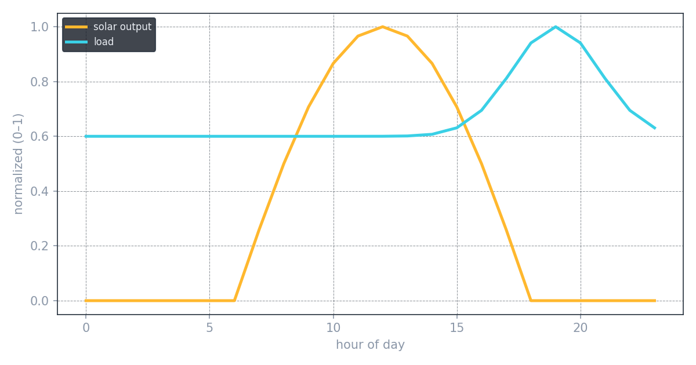
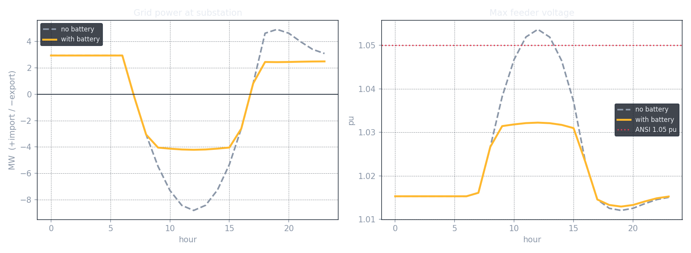
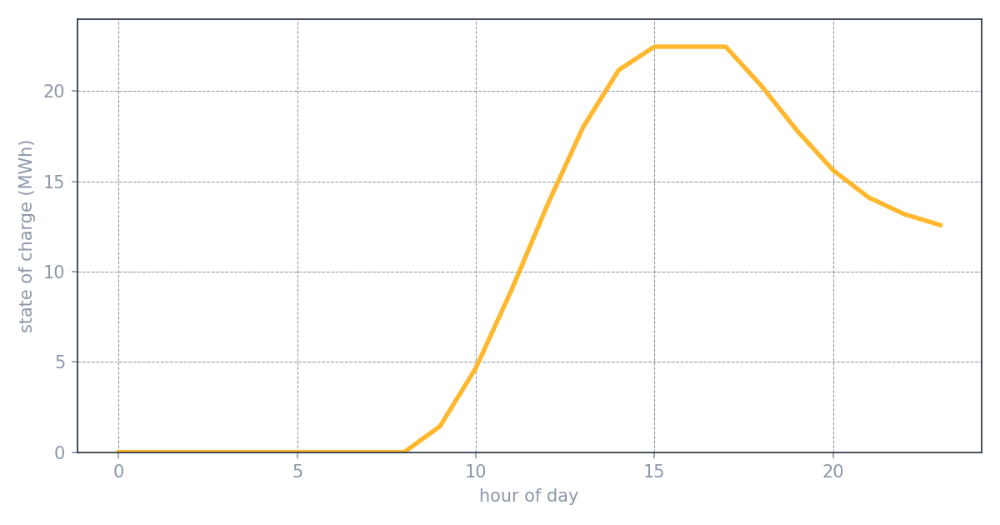

Battery Storage Dispatch & Control
What a battery does for a solar-saturated feeder, hour by hour. A time-series dispatch study that charges a battery on the midday solar surge — killing the over-voltage the solar study found — and discharges it into the evening peak, flattening the net-load "duck curve" with one device.
The solar hosting-capacity study answered "how much fits." This one answers "what do you do about it." A feeder loaded with solar has two opposite problems at opposite ends of the day: too much power flowing backward at midday (over-voltage), and too much demand in the evening after the sun sets (peak load). A battery, dispatched intelligently, can solve both — and battery storage is the fastest-growing subsector in grid-scale power.
This is a quasi-static time-series simulation: the feeder is solved at every hour of a representative day, with a rule-based controller deciding when the battery charges and discharges.
The same canonical 12.47 kV feeder as the solar study (4.8 MW peak load), now carrying 12 MW of distributed PV — near its hosting limit, so midday genuinely stresses it. A 5 MW / 24 MWh battery is distributed across the feeder. Representative daily profiles drive it: a solar bell peaking at noon, and load peaking in the evening.

A rule-based setpoint-band controller keeps the power exchanged with the grid inside a chosen window — roughly −4 MW (export) to +2.5 MW (import). When midday solar would push more than 4 MW backward, the battery charges the excess; when the evening peak would pull more than 2.5 MW, it discharges. State of charge is integrated hour by hour with round-trip efficiency and capacity limits.
One battery fixes a voltage problem and a demand problem at opposite ends of the day. Charging the midday surplus caps the reverse flow and pulls the over-voltage back under limit; discharging into the evening shaves the peak.

| Metric | No battery | With battery |
|---|---|---|
| Midday max voltage | 1.054 pu (over limit) | 1.032 pu (within limit) |
| Midday reverse flow | 8.8 MW | 4.2 MW (capped) |
| Evening peak grid draw | 4.9 MW | 2.9 MW (~40% shave) |
The battery's day tells the story: empty in the morning, charging through the midday solar surge, then discharging into the evening peak. It doesn't fully cycle — some reserve energy is left at day's end, which is a real dispatch and sizing trade-off (tightening the import cap would use more of it), not a modeling error.

- Time-series simulation. Solving the feeder across every hour of a day, rather than a single snapshot — the quasi-static method behind real dispatch studies.
- State of charge as a cross-time integrator. The battery links one hour to the next; energy, not just power, has to balance over the day.
- Rule-based dispatch control. A setpoint-band controller translating a grid-power target into charge/discharge commands.
This is the sequel to the solar hosting-capacity study: that project found the over-voltage problem, and this one solves it with storage. Same feeder, one narrative — solar creates the problem, storage manages it, and the IBR protection study ahead tackles how these inverter-based sources break the protective relaying modeled in the coordination study. Three renewables projects and three protection projects, one connected system.
The time-series notebook — feeder model, daily profiles, dispatch controller, and the before/after and state-of-charge plots — is on GitHub.